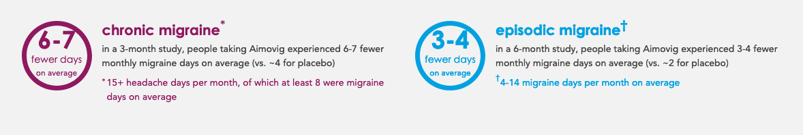

(2) Faithful to the Data#
Generating answers that are (1) understandable, (2) faithfully represent patterns in the data, and (3) are relevant given the problem one is seeking to solve.
What do means, medians, standard deviations, linear regressions, logistic regressions, generalized additive models (GAMs), singular value decomposition (SVD), principal component analyses (PCAs), clustering algorithms, and anomaly detection algorithms all have in common?
Answer: unless your dataset is extremely degenerate, you can point any of these tools at your data and they will return a relatively easy-to-understand characterization of the structure of your data.
At first, that may seem extremely exciting. But if you think about it a little longer you will realize the problem: all of these are designed to give you a relatively understandable summary of radically different properties of your data, and even though they will all provide you with a result, these results can’t all possibly be faithful representations of the dominant patterns in your data.
To illustrate the point, suppose I told you that in one university math course, the average grade was a B-. You might infer that students were doing pretty well! But now suppose I told you that in a different university math course, 20% of the students had gotten a 0 on the midterm and on the final—you would probably infer something was going seriously wrong in that class. And yet those two statistics could both be true of the same class—the only difference is what patterns in the data I, the data scientist, have decided are meaningful to communicate to you, the reader.
The example of the math class in which the average grade was a B- and 20% of the students were failing also illustrates one of the great dangers of tools for data summarization: they are so eager to please, they will always provide you with an answer, whether that answer is meaningful or not. I think most readers would agree that learning that the average grade in the class was a B- actually misleads more than it informs (since for the class to have an average grade of 80% and a 20% fail rate, the grade distribution would need to be something like 20% 0’s and 80% 100’s). Indeed, it’s worth emphasizing that while hearing “the average grade is a B-” makes the reader think that most kids are doing ok-ish, the reality is that no one in the class is doing ok-ish! They’re either doing horribly or terrifically!
The Case of Aimovig#
Less that feel like a contrived example, consider the case of Aimovig, a drug authorized by the FDA in 2018 for treating chronic migraines that was heralded as a “game changer.”
To get Aimovig authorized, the pharmaceutical companies developing (Amgen and Novartis) had to run a clinical trial in which a random sample of people with chronic migraines was given Aimovig (the treatment group) and a random sample was a placebo (the control group). Patients in the clinical trial self-reported how their migraine frequency changed when in the trial, and the effectiveness of Aimovig was then evaluated by comparing the decrease in self-reported migraines for those taking Aimovig (on average, a decrease of 6-7 migraines a month) to the decrease in self-reported migraines for those taking a placebo (on average, a decrease of 4 migraines a month).[1] This difference of 2-3 migraines a month — called the “Average Treatment Effect” of the trial — was found to be positive and statistically significant, and so the drug was authorized. Indeed, if you see an ad for Aimovig, you’ll probably see the average effect of the drug reported in the same way:

That’s great! Chronic migraines can be a crippling disability, so any improvement in treatment is exciting. But you would be excused for asking why people were getting so excited about what seems like a relatively small reduction in migraines.
The answer, as it turns out, is that almost nobody experiences this “average effect.” Instead, most people who take Aimovig see little to no benefit, but some (depending on your criteria, something like 40%) see their migraine frequency fall by 50% or more. Amgen and Novartis don’t yet know how to identify who will benefit and who will not before they try the drug, and we don’t allow drug companies to “move the goalposts” after a clinical trial has already started by changing the way they plan to measure the effectiveness of a drug (for fear they will hunt through the data till they find a spurious correlation that makes it look like the drug works when it really doesn’t), so this average effect remains the only statistic that Amgen and Novartis are allowed to report in their advertising.
But if you’re a doctor or a patient, it seems clear that this simple average effect — a reduction of 2-3 migraines a month — really does not provide a faithful summary of the underlying variation.
But… I Thought Unsupervised Machine Learning Always Found The “Best”#
“Fine,” I hear you say, “that makes sense for simple summary statistics. Those are computed by simple formulas. But what about unsupervised machine learning algorithms or generalized additive models? Those use numerical optimization to find the best answer!”
Well… yes and no. As you may recall, in the first chapter of the book I posited that all data science algorithms are just fancy tools for answering questions, and even the most sophisticated unsupervised machine learning algorithms are no exception. While it is true that the machinery that underlies these algorithms is much more sophisticated than the formula we use for calculating a variable’s average, it is important to not attribute too much intelligence to these tools.
Underlying any unsupervised machine learning algorithm is a simple formula that takes as input whatever parameters the algorithm gets to choose (be those factor loads in a PCA model, or the assignment of observations to clusters in a clustering algorithm) and returns as output a single number. Often this number is called “loss,” and the function is called a “loss function,” but occasionally different terminology will be used.
One way to think of the job of an unsupervised machine learning algorithm is to pick the parameter values that minimize this loss function. A clustering algorithm for example, may try and assign observations to clusters to maximize the similarity of observations within a cluster (say, by minimizing the sum of squared differences between the values of certain variables for all observations within a cluster) while also maximizing the differences between observations in different clusters (say, by maximizing the sum of squared differences between the values of certain variables for all observations not in the same cluster).
But another way to say that is that the job of an unsupervised machine learning algorithm (or any algorithm, really) is to find the parameter values (coefficients in a regression, observation assignments for a clustering algorithm) that answer the question “If my goal is to minimize [whatever the loss function your specific algorithm seeks to minimize], how should I do it?” But while they are likely to find the best way to accomplish that goal given the parameters they control, they will do so regardless of whether the “best” solution is actually a “good” solution! Point a clustering algorithm at any data and ask it to split the data into 3 clusters, and it will pick the best way to split the data into three clusters, even if the three clusters are almost indistinguishable. In other words, clustering algorithms assign observations to clusters… even when there’s no real clustering of the data! Dimensionality reduction algorithms will always tell you a way to drop dimensions, and anomaly detection algorithms will always find (relative) outliers.
Moreover, just because your clustering algorithm finds what it thinks is the best solution doesn’t mean there isn’t a substantively very different solution that was just a little less good it hasn’t told you about.
It’s up to you, the data scientist, to evaluate whether the answers these algorithms provide to relatively myopic questions give a meaningful picture of the data.